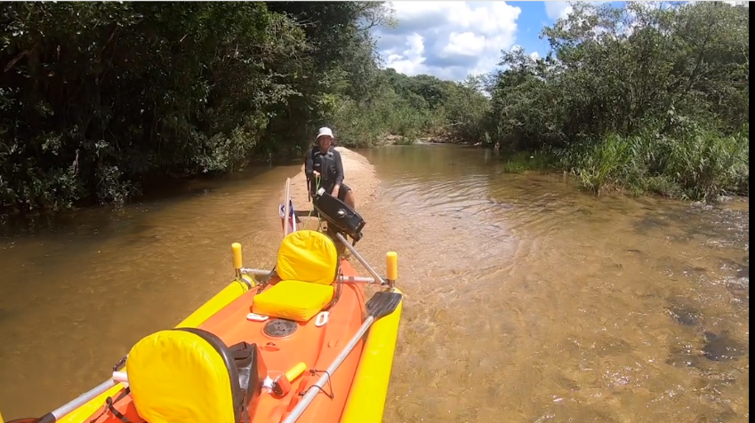
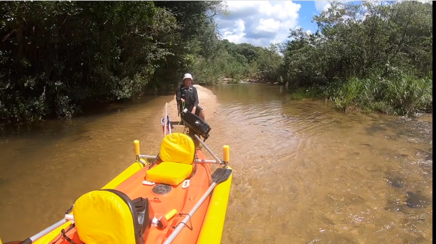

Quem Sou
Olá, sou Waldy Freitas. Ao longo da minha vida, fui privilegiado com a oportunidade de viver experiências que transformaram minha visão de mundo. Um marco importante dessa jornada foi a minha expedição pelo Rio São Francisco, onde percorri desde a nascente até o mar. De canoa, depois de jet ski, descobri não apenas a grandiosidade desse rio, mas também a diversidade cultural e os desafios ambientais que ele enfrenta.
Ao longo do caminho, encontrei histórias e pessoas que deram um novo significado. Hoje, compartilho com vocês um pouco dessa experiência no meu livro "Da Nascente ao Mar".

 
